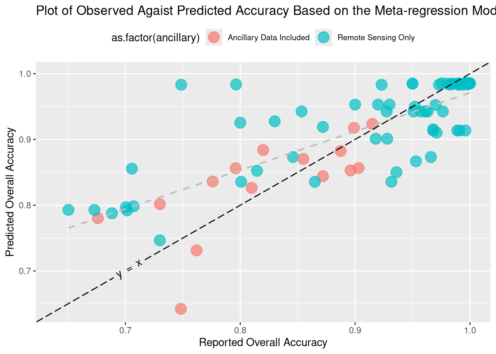

df = transpose(my_data_ojs);
Plot.plot({
marks: [
Plot.frame(),
Plot.dot(df, {
y: "AuthorYear",
x: "OA_reported",
fill: "SDG_theme",
}),
],
grid: true,
// frame space
marginLeft:200,
width: 800,
height: 500,
// y-&x- axis + title
x: {
label: "Reported Overall Accuracy",
labelFontSize: 24,// ??: don't think this is doing anything
},
y: {
label: null,
tickFontSize: 40, // ??
},
title: html`<span style="font-size: 24px; font-weight: bold;">Overall Accuracy Reported by Each Study</span>`,
// Include a legend for the color channel
color: {
legend: true,
}
});Thesis Results Summary
Collected Data
Distribution
[ADD TEXT]
Predictors
[ADD TEXT]
| Feature | Overall |
|---|---|
| Overall Accuracy | 0.90 (0.65 - 1.00) |
| Sample Size | 6,401,352.08 (259.00 - 75,782,016.00) |
| Majority Class Propotion | 0.72 (0.14 - 1.00) |
| Machine Learning Model Group | |
| Neural Networks | 41 (48%) |
| Other | 6 (7.0%) |
| Tree-Based Models | 39 (45%) |
| SDG Goal | |
| SDG 11: Sustainable Cities and Communities | 38 (44%) |
| SDG 15: Life on Land | 37 (43%) |
| SDG 2: Zero Hunger | 11 (13%) |
| Classification Type | |
| Object-level | 46 (53%) |
| Pixel-level | 36 (42%) |
| Unclear | 4 (4.7%) |
| Indices Used | 63 (73%) |
| Ancillary Data | 15 (17%) |
| RS Device Group | |
| Landsat | 15 (17%) |
| Not Reported | 7 (8.1%) |
| Other | 44 (51%) |
| Sentinel | 20 (23%) |
| RS Spatial resolution (m) | |
| >1 | 7 (8.1%) |
| 10 | 15 (17%) |
| 15-25 | 16 (19%) |
| 30 | 8 (9.3%) |
| Not Reported | 40 (47%) |
| Citation Number | 14.84 (2.00 - 68.00) |
Model
Something something
Results

Observed and predicted overall accuracy. The colour indicates whether the addition of ancillary data in the primary study’s model. The line of perfect agreement \(y = x\) is in black and fit regression line in grey.